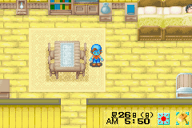
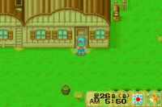
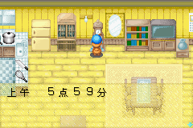

在晚上12点之后 把自己弄成用一下工具就送医院的状态（像个河童）
让时间到5：50 最好存个档
让时间到5点59分 这里要看钟
在5点59分和6点交接的那一瞬间
按下 ENTER 或者 家计本的键 成功与否在此一举
如果像图片上一样 那恭喜你成功了
打开 家计本 然后再退出到游戏界面
你会发现已经是第二天的早上 而且你还在原地 还是蓝脸（囧）
然后怎么用道具都不累
要手快 最后那点消失就按下 农作物、动物停止生长一天
无敌只保持一天，第二天瞬间转移或者睡觉后无效
泡温泉、吃东西…..补充体力即无效
可以随意挖矿啦